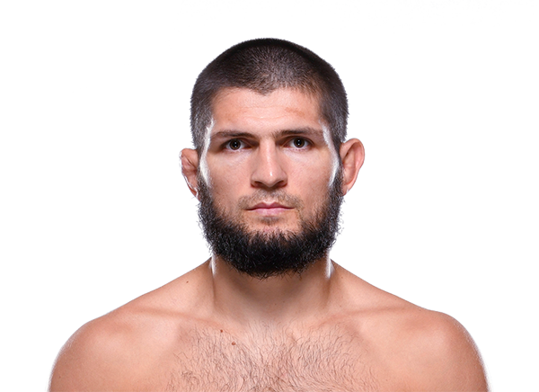

Khabib Nurmagomedov es un ex peleador ruso de artes marciales mixtas considerado uno de los atletas más dominantes en la historia del deporte. Nació el 20 de septiembre de 1988 en Sildi, una pequeña localidad en la república de Daguestán, Rusia. Desde muy joven fue entrenado por su padre Abdulmanap Nurmagomedov, quien lo introdujo en la lucha y en diferentes disciplinas de combate. Gracias a su disciplina, mentalidad fuerte y estilo basado en la lucha y el control en el suelo, Khabib se convirtió en uno de los peleadores más temidos del MMA. Compitió en la organización UFC, donde logró convertirse en campeón del peso ligero y defender su título en varias ocasiones. Es especialmente recordado por su victoria contra Conor McGregor en 2018, una de las peleas más famosas en la historia del deporte. Se retiró invicto con un récord profesional de 29 victorias y 0 derrotas, algo extremadamente raro en las artes marciales mixtas.

Khabib Nurmagomedov es ampliamente reconocido por su estilo de combate dominante basado en la lucha y el control total del oponente en el suelo. Nació y creció en Daguestán, una región conocida por producir grandes luchadores. Desde pequeño entrenó bajo la estricta guía de su padre, quien lo preparó en disciplinas como sambo, lucha y judo. A lo largo de su carrera profesional en MMA, Khabib demostró una capacidad extraordinaria para derribar a sus rivales y controlarlos durante toda la pelea. En la Ultimate Fighting Championship alcanzó el título de campeón de peso ligero, defendiendo su cinturón contra algunos de los mejores peleadores del mundo. Su estilo implacable, su resistencia física y su mentalidad competitiva lo convirtieron en uno de los campeones más respetados de la historia del deporte.
En su carrera dentro de MMA compitió principalmente en la categoría:
Khabib es famoso por:
Gracias a su disciplina, su entrenamiento desde joven y su mentalidad fuerte, Khabib Nurmagomedov se convirtió en una de las figuras más influyentes del MMA moderno y en uno de los campeones más dominantes que ha tenido la UFC.
El estilo de pelea de Khabib se caracteriza por una presión constante, derribos efectivos y un control casi absoluto del rival en el suelo. Durante su carrera en la Ultimate Fighting Championship, derrotó a peleadores de alto nivel como Conor McGregor, Dustin Poirier y Justin Gaethje. Su récord invicto de 29-0 lo convirtió en una leyenda del deporte y en uno de los campeones más respetados en la historia de las artes marciales mixtas.
otros que podrían interesarte: